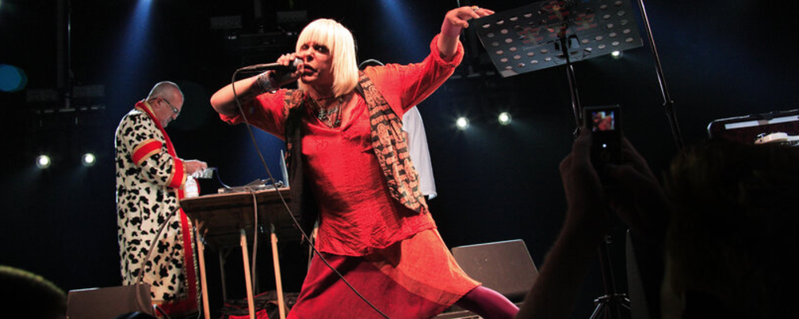
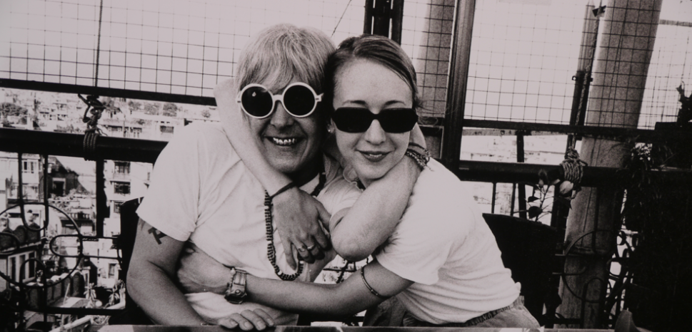

En 1998, P-Orridge estaba terminando su asociación con el nombre Psychic TV, la banda que crearon después de la separación de Throbbing Gristle. La primera actuación importante de Thee Majesty fue en 1998 en Estocolmo, Suecia, en un festival internacional de palabras habladas que incluyó a Michael Gira y Wanda Coleman, entre otros artistas notables de palabras habladas.La primera alineación de Thee Majesty para el programa de Suecia incluyó a P-Orridge, Larry Thrasher, Bachir Attar y Chandra Shukla.
Más tarde, en Nueva York, P-Orridge conoció a Bryin Dall y comenzó a realizar presentaciones en vivo en Nueva York y San Francisco y giras con la banda industrial Pigface. La segunda gran actuación de The Majesty fue en el Royal Festival Hall de Londres, Inglaterra, el 1 de mayo de 1999, que también fue el espectáculo "final" de PTV. El programa se llamó Time's Up, que también era el nombre del CD debut del nuevo proyecto, lanzado por el sello de Dall The Order of the Suffering Clown a través de World Serpent Distribution.
Desde entonces, Thee Majesty ha siguió siendo un proyecto intermitente, solo tocando festivales esporádicos, eventos de arte y lugares íntimos en Europa y los Estados Unidos, y lanzando muy pocos álbumes de estudio originales. En 2009, Thee Majesty interpretó un espectáculo aclamado por la crítica sobre un tema de historia de los transgéneros en el Centro Pompidou.
En 2004, se les unió la esposa de P-Orridge, Jacqueline Breyer, conocida como Lady Jaye Breyer P-Orridge, y brevemente Morrison Edley (de Toilet Böys). El proyecto siguió siendo un vehículo para los discursos y conceptos de forma semi-libre de P-Orridge, apoyados por la guitarra de Dall y los paisajes sonoros de muestra junto con la ejecución de samplers de Thrasher, a veces aumentados por alguna combinación de otros músicos. En 2007, la esposa de Genesis, Lady Jaye, murió de un paro cardíaco. Genesis P-Orridge falleció en 2020, poniendo fin al proyecto.